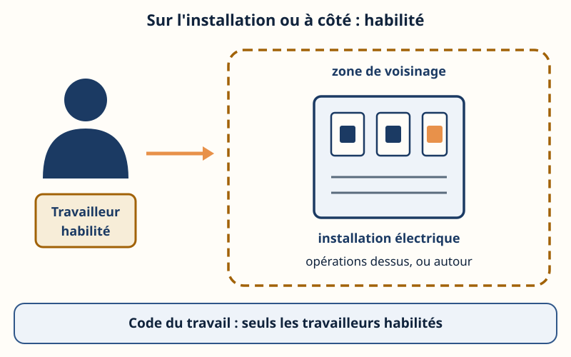
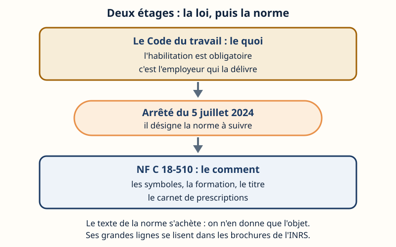
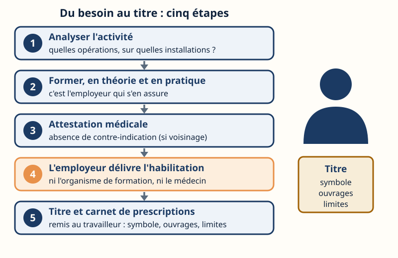
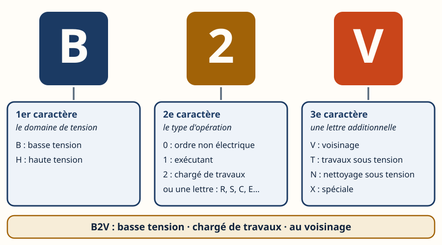
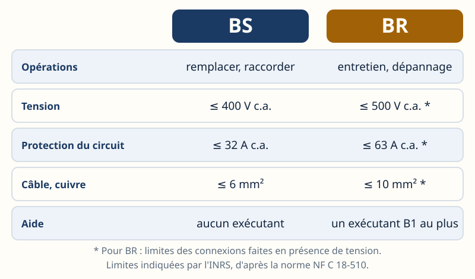
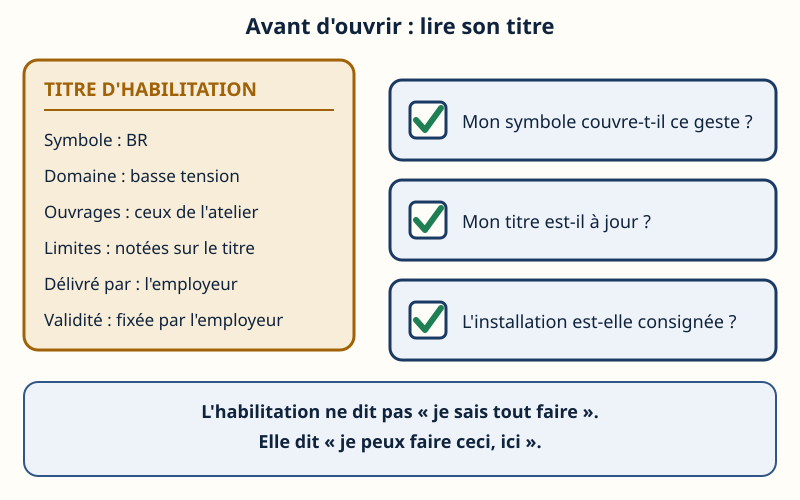
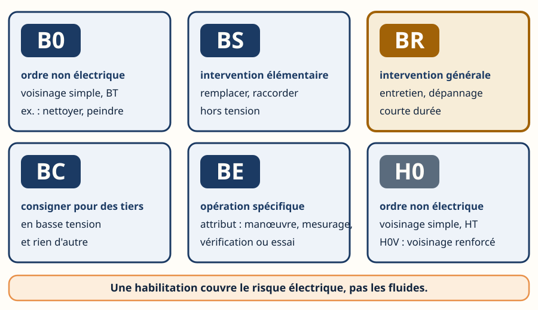

L'habilitation — qui a le droit d'ouvrir l'armoire
Mini-station commentée · 8 écrans et 4 questions · environ 10 minutes
Objectif
À la fin de la station, vous savez dire ce qui soumet une opération à l'habilitation, qui la délivre, lire un symbole comme B2V ou BR, choisir celui qui correspond à un geste de technicien du froid, et vérifier ce qui le rend valable : l'attestation médicale et le recyclage.
Référentiel : TP TECVC, REAC TP-00133 — hors REAC : culture professionnelle du technicien et du chargé d'affaires. Aucune des compétences CP1 à CP10 ne porte sur l'habilitation.
Chaque écran peut être expliqué à voix haute : le bouton « Écouter » commente ce que vous voyez. Rien n'est dit qui ne soit aussi écrit.
1 / 12
Écran 1 sur 8
L'obligation : pas d'habilitation, pas d'opération
Article R. 4544-9 du Code du travail : « Les opérations sur les installations électriques ou dans leur voisinage ne peuvent être effectuées que par des travailleurs habilités. »
Le Code (article R. 4544-2) range dans les opérations sur les installations les travaux hors tension, les travaux sous tension, les manœuvres, les essais, les mesurages et les vérifications, et, en basse tension, les interventions. Le voisinage est une zone définie autour des pièces nues sous tension ; on y trouve des opérations d'ordre électrique et non électrique.
Ce qui n'en demande pas
L'utilisation normale d'un appareil électrique, branchement compris. Et, pour une personne avertie, quelques opérations simples (changer une lampe, réarmer une protection, remplacer un fusible à l'identique) si le matériel est intact et protégé contre les contacts directs (INRS).

Sur l'installation, ou à côté : la même règle.
Écran 2 sur 8
Deux étages : le Code du travail, puis la norme
Le Code du travail impose l'habilitation. La norme NF C 18-510, « Opérations sur les ouvrages et installations électriques et dans un environnement électrique — Prévention du risque électrique », en donne les modalités : symboles, formation préalable, titre, carnet de prescriptions.
Le lien est écrit à l'article R. 4544-3 : les modalités recommandées figurent dans des normes homologuées, dont les références sont publiées par arrêté. L'arrêté du 5 juillet 2024 désigne la NF C 18-510 (édition de janvier 2012) et son amendement A1 (février 2020) ; il abroge l'arrêté du 20 novembre 2017.
Le piège
« Recommandées » qualifie les modalités, pas l'habilitation : celle-ci est obligatoire. Le texte de la norme est payant ; ici, on ne cite que son objet public et ce que l'INRS en publie.

La loi dit quoi ; la norme dit comment.
Écran 3 sur 8
Qui habilite : l'employeur
Article R. 4544-10 : l'habilitation est délivrée par l'employeur et précise la nature des opérations autorisées. Avant de la délivrer, il s'assure que le travailleur a reçu la formation théorique et pratique qui lui donne la connaissance des risques et des mesures à prendre. Il lui remet un carnet de prescriptions.
Intérimaire : c'est l'entreprise utilisatrice qui habilite, pour la durée de la mission.
Indépendant, auto-entrepreneur, chef d'entreprise : pas d'auto-habilitation possible.
Sous-traitant : habilité par son propre employeur.
Le piège
Le stage ne suffit pas : le titre est un acte de l'employeur. Et être habilité ne donne pas le droit d'agir de son propre chef : l'employeur désigne le travailleur pour l'opération (INRS).

La quatrième case, en orange : la seule qui habilite.
Écran 4 sur 8
Lire un symbole : trois caractères
Chaque habilitation a un symbole, fait de lettres et de chiffres :
1er caractère : le domaine de tension — B basse tension, H haute tension ;
2e caractère : le type d'opération, en chiffre (0 ordre non électrique, 1 exécutant, 2 chargé de travaux) ou en lettre (C consignation, R intervention BT générale, S intervention BT élémentaire, E opérations spécifiques) ;
3e caractère : une lettre additionnelle — V voisinage, T travaux sous tension, N nettoyage sous tension, X spéciale.
Exemple de l'INRS : B2V = chargé de travaux en basse tension, qui peut travailler au voisinage de pièces nues sous tension. Le symbole E reçoit en plus un attribut : manœuvre, mesurage, vérification ou essai.
Pour vous entraîner à lire et à choisir des symboles : HoCourant, le réseau voisin dédié à l'habilitation.

Un symbole se lit de gauche à droite, un caractère à la fois.
Écran 5 sur 8
Les symboles du technicien du froid
B0 : opérations d'ordre non électrique (nettoyage, peinture, maçonnerie) dans la zone de voisinage simple, en basse tension. Pas d’entrée en zone de voisinage renforcé : B0V n’existe pas. H0 et H0V : la même idée en haute tension (voisinage simple, puis renforcé).
BS : intervention élémentaire. Pas besoin d'être qualifié en électricité pour l'être, mais il faut être formé aux opérations.
BR : intervention générale en basse tension, c'est-à-dire l'entretien et le dépannage ; il faut être qualifié en électricité.
BC : consigner pour des tiers, en basse tension ; le chargé de consignation ne fait que consigner et déconsigner.
BE + attribut : manœuvre, mesurage, vérification ou essai.
Le symbole est choisi d'après l'activité réelle du travailleur, pas d'après son diplôme ; un même titre peut cumuler plusieurs symboles. Et l'habilitation n'est pas l'attestation d'aptitude aux fluides frigorigènes : c'est un autre papier (voir Aptitude & capacité).
Six symboles à connaître ; BR est celui de l'entretien et du dépannage.
Écran 6 sur 8
BS ou BR : le bon niveau pour le bon geste
BS n'autorise qu'une liste courte : remplacer à l'identique un fusible, une lampe, un accessoire d'éclairage, une prise ou un interrupteur ; raccorder un matériel à un circuit en attente ; réarmer une protection dans un environnement sûr. Toujours hors tension, sans voisinage, sans exécutant.
BR couvre des interventions de courte durée sur des parties de faible étendue d'une installation : entretien, dépannage. Hors tension, sauf certaines connexions sur un circuit ouvert ; un exécutant B1 au plus ; il peut consigner pour son propre compte et celui de son exécutant.
Le raisonnement
Rechercher une panne sur un circuit de commande, ou remplacer un contacteur, n'est pas dans la liste de BS : c'est le domaine de BR.

Limites indiquées par l'INRS, d'après la norme : le texte de la norme fait foi.
Écran 7 sur 8
Le titre, l'attestation médicale, le recyclage
Le titre d'habilitation est le document de l'employeur : il mentionne les symboles, les domaines de tension, les ouvrages ou installations concernés et, si besoin, des limitations. Sa durée de validité est fixée par l'employeur.
L'attestation médicale : depuis le 1er octobre 2025 (décret du 18 avril 2025), l'habilitation qui autorise le voisinage de pièces nues sous tension n'est valable que si le travailleur détient une attestation d'absence de contre-indication médicale. Elle est délivrée par le médecin du travail et dure cinq ans. Un avis d'aptitude plus ancien peut en tenir lieu pendant cinq ans à compter de sa délivrance.
Le recyclage : l'INRS recommande trois ans, comme la norme (deux ans pour une pratique occasionnelle), avec un suivi annuel de l'adéquation du titre à l'activité réelle.
Cas à part : pour les travaux sous tension, le titre est valable un an, et la formation relève d'un organisme agréé (article R. 4544-11).

Le cycle ne s'arrête pas à la remise du titre : un point orange passe d'une carte à la suivante.
Écran 8 sur 8
Bilan et le réflexe
Pas d'habilitation, pas d'opération sur une installation ni dans son voisinage (R. 4544-9).
La loi impose, la norme donne les modalités ; c'est l'employeur qui habilite.
Un symbole se lit en trois caractères : domaine · type · lettre additionnelle.
BS remplace et raccorde ; BR entretient et dépanne ; BC consigne pour les autres.
Le titre vit : attestation médicale, recyclage, validité fixée par l'employeur.
Le réflexe : lire son titre avant d'ouvrir l'armoire.

Trois questions, dans cet ordre, avant chaque ouverture.
Question 1 sur 4
Un technicien revient de son stage. Qui délivre son habilitation ?
Rappel de l'écran 3 — la case orange.
Question 2 sur 4
Un titre porte le symbole B2V. Comment se lit-il ?
Rappel de l'écran 4 — un caractère à la fois.
Question 3 sur 4
Dépanner un circuit de commande en basse tension, contacteur compris : quel symbole ?

Rappel de l'écran 5 — les six symboles.
Question 4 sur 4
Habilitation avec voisinage de pièces nues sous tension : que faut-il aussi détenir ?
Rappel de l'écran 7 — la boucle du titre.
Les correspondances de la station
Consigner (même sous-ligne) — la mise hors tension que BR fait pour son compte et que BC fait pour les autres.
Terre & différentiel (même sous-ligne) — protéger les personnes : la règle d'habilitation suppose déjà une installation sûre.
Les EPI (sous-ligne Risques professionnels) — la règle d'un côté, le geste protégé de l'autre.
Les 9 principes et le document unique (sous-ligne Risques professionnels) — l'habilitation est une mesure de prévention, choisie après l'évaluation du risque électrique.
HoCourant (autre réseau inerWeb) — s'entraîner à lire et à choisir des symboles d'habilitation.
![Six cartes en deux rangées : B0 (ordre non électrique, voisinage simple en basse tension, par exemple nettoyer ou peindre), BS (intervention élémentaire, remplacer ou raccorder, hors tension), BR mise en avant en ocre (intervention générale, entretien et dépannage, courte durée), BC (consigner pour des tiers en basse tension, et rien d'autre), BE (opération spécifique, avec un attribut manœuvre, mesurage, vérification ou essai), H0 (ordre non électrique, voisinage simple en haute tension, H0V pour le voisinage renforcé). Une bande rappelle qu'une habilitation couvre le risque électrique, pas les fluides.](svg/symboles-frigoriste.svg)